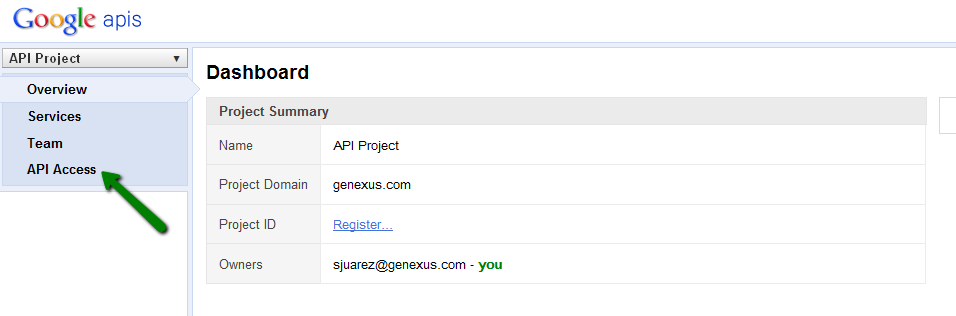
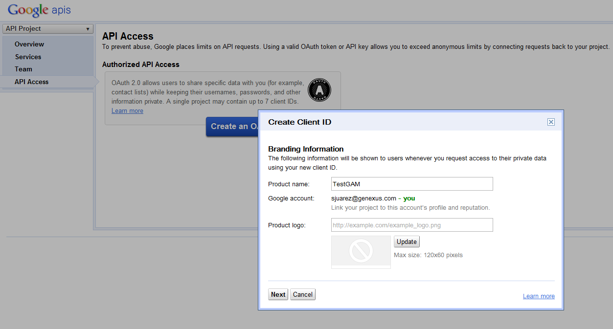
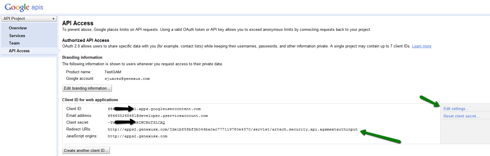
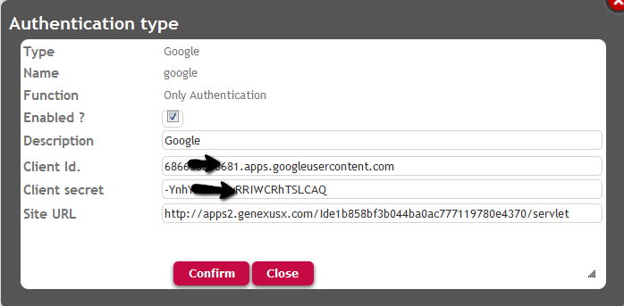
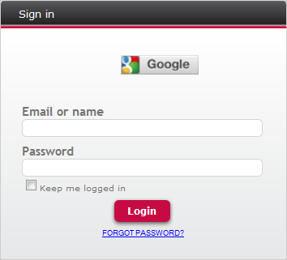

For X Evolution 3 upgrade 4 or upper, see GAM Google Authentication Type.
Using GeneXus Access Manager you can authenticate on Google site, just by following these steps:
1. You need to create a "Google client application" in Google site and obtain Client Id and Client Secret for that application.
Go to the following link: https://code.google.com/apis/console
2. There go to API Access, as shown in the figure:

3. Then you need to create an Oauth Application. Fill in a Product Name and press next:

4. In Client Id Settings check box, select "Application Type" = Web Application.
5. Finally, you need to go through "Edit Settings", and change the Redirect URIs. There you may specify the complete URI of your application, including the artech.security.api.agamextauthinput object, as the figure shows:

Example:
6. In GeneXus, define a new Authentication Type = Google using the GAM Backoffice.
Enter Cliend Id and Client Secret obtained in Google site.

Important note:
In case of java and .NET you need to enter the complete site URL in CallBack URL. That is, in the example: http://apps2.genexusx.com/Ide1b858bf3b044ba0ac777119780e4370/servlet.
In case of Ruby you need to specify in SITE URL only the server, not the complete URL, for example: http://apps2.genexusx.com
In case of Web Applications, the GamExampleLogin object (which is part of the GAM example library) includes automatically a button by which the user can login to Google.
This button is included dynamically, as the Google Authentication Type is detected to be defined in the GAM Repository.

The following code is associated to the "Google" Button:
Event &ButtonGoogle.Click GAMRepository.LoginGoogle() EndEvent
The following code is used for that purpose:
Event 'Google'
SDActions.LoginExternal("google", &User, &Password)
EndEvent
GAM Facebook Authentication Type
GAM - Twitter Authentication Type
Additional Scope Property for GAM Google / Facebook Authentication Types